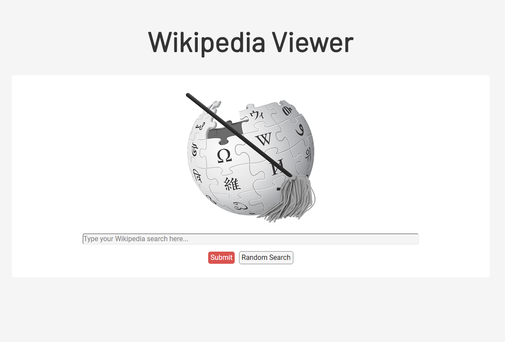
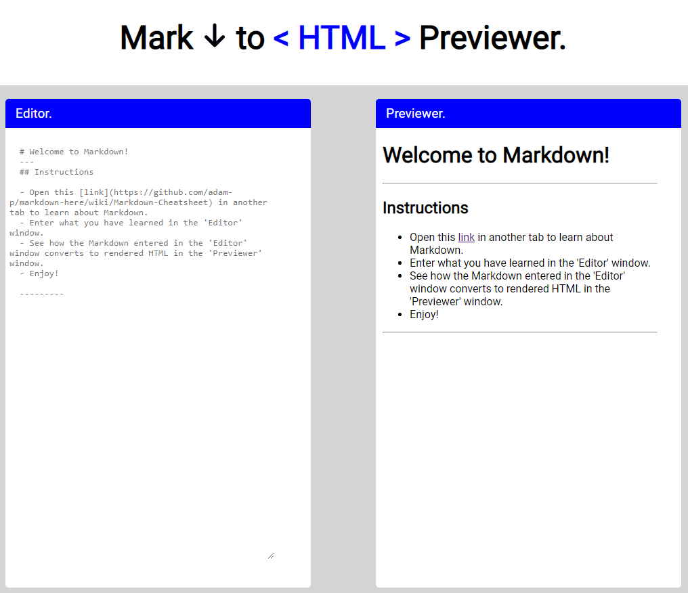

My Work

Unbeatable Tic-tac-toe
JS Tic-tac-toe game. The Minimax algorithm is implemented to make the AI unbeatable.

Wikipedia Search App
This app takes user input as a search key to make an API call from Wikipedia using Fetch, then the first 10
results are displayed.
The app was built using CSS, HTML, and JS. Webpack was used as bundler.

Markdown to HTML Previewer
A React app that takes markdown input from the user and converts it to rendered HTML.